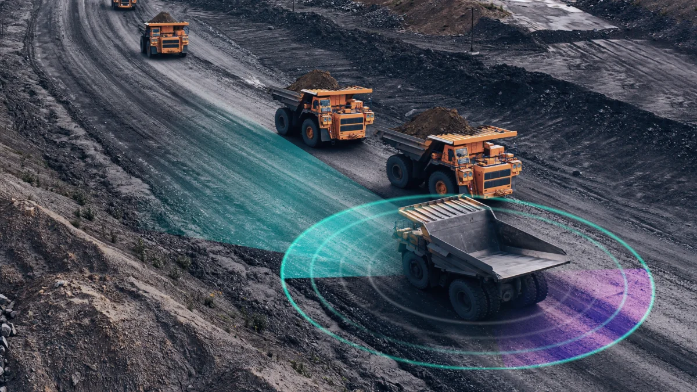
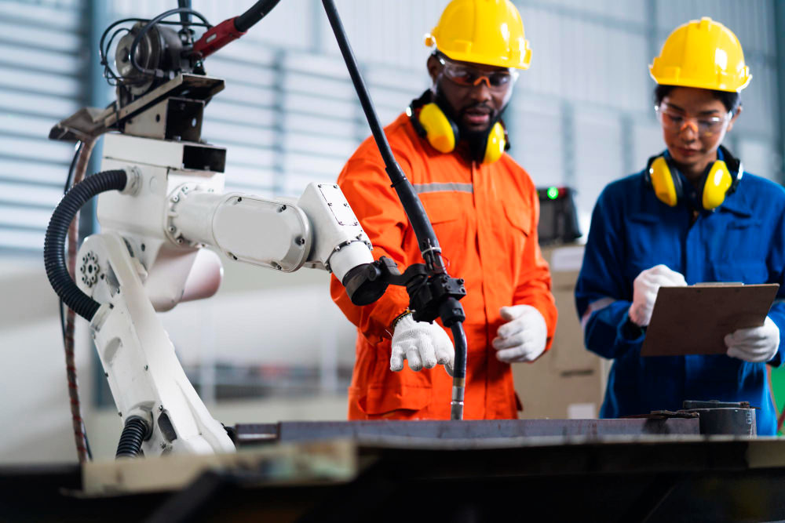

Discover how robotics are transforming the construction industry by improving efficiency and safety.
Construction robotics refers to the use of automated machines to assist with construction tasks such as bricklaying, 3D printing, and demolition. This technology aims to increase productivity, improve safety, and reduce costs in the construction industry.
Here are some key robotics technologies currently used in the construction industry:
Construction robotics is revolutionizing the industry by introducing automated solutions that improve efficiency, safety, and precision on job sites. Robots are already used for tasks such as bricklaying, demolition, and 3D printing, helping to alleviate labor shortages and reduce the physical demands on human workers. With advancements in artificial intelligence, robots can now perform repetitive tasks continuously, allowing workers to focus on more complex activities. Despite fears that automation might replace jobs, robots are currently being viewed as tools that complement human labor rather than replace it, helping to address labor shortages and improve overall productivity in construction.
